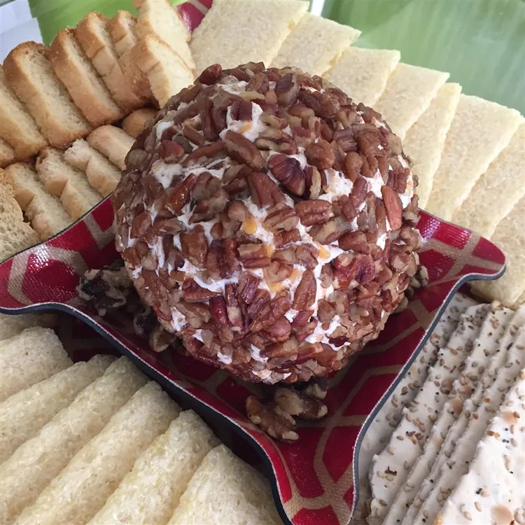

Cheese balls

Description
A delicious and easy way to enjoy a cheese ball. You could substitute Colby, mozzarella, or Monterey Jack cheese
for the Cheddar. Cut this recipe in half to make a smaller version. Serve with crackers and enjoy!
Ingredients
- 2 (8 ounce) packages cream cheese, softened
- 1 (1 ounce) package ranch dressing mix
- 2 ½ cups shredded Cheddar cheese
- Chopped nuts
Steps
- Mash cream cheese in a medium sized bowl. Mix dressing mix and Cheddar cheese into cream cheese.
Shape the mixture into a ball.
- Roll the cheese ball in the chopped nuts. Refrigerate covered until ready to serve.
Home